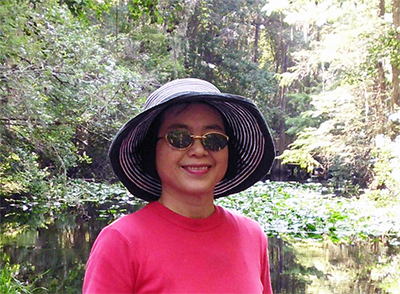

Information
| Current Position : |
Professor, Department of Education, National Cheng-Chi University, Taiwan |
Cypress Swamp Trail - Highlands Hammock State Park, Florida. Photo taken: 2012/9/2 |
| Current Address : |
Department of Education, National Cheng-chi University, No.64, Sec. 2, Chi Nan Road, Wen Shan District, Taipei, Taiwan 116 |
| Phone Number ： |
(886) 2-2939-3091#88007 |
| Fax : |
(886 )2-29396823 |
| E-mail : |
iaezcpc@nccu.edu.tw |
Highest Degree ：
Ph. D. Comparative and International Education
(University of California, Los Angeles, USA, 1992)
Teaching Subjects：
Comparative Education,
Chinese Higher Education,
Gender Equity Education,
Education Reform from Global Perspective,
Educational History.
Interested Lecturing Topics：
- Cross-straitization: How Educational Exchanges Can Facilitate Peace for Countries in Conflict
- The Great Experiment of Taiwanese Education Reform: from Global and Local Perspective
- Neo-liberalism and Higher Education: The Experience from China and Taiwan
- The SSCI Syndrome: The Impact of the World-Class University Ranking
- Education Borrowing Syndrome: The PISA Game
- Educational Internationalization in East Asia
Work Experience：
- Fulbright scholar, University of Miami (2012~2013)
- Keynote Speaker, The Fourth Conference for the Evaluative Study on Citizenship Education from the Approach of Global Standard, Faculty of Education, Hiroshima University, Japan (2012.9)
- Honorary Professor, Akita International University, Japan (2012.7) • Keynote Speaker, International Conference on Changing Academic Profession. Huazhong University of Science & Technology, China. (2011.11)
- Keynote Speaker, International Conference on World University Network (WUN). The Hong Kong Institute of Education, Hong Kong (2011.10)
- Drafter, Taiwan Education White Paper Report, Ministry of Education (ROC) (2010.10-2011.3)
- Fulbright scholar, Fairbank Center for East Asia Studies, Harvard University(2006.8~2007.7)
- Visiting Professor and Guest Lecturer, Ohio State University, (May, 2007)
- Coordinator, Taiwanese Education Reform Forum (NGO)(2006 to-date)
- Visiting Professor, Beijing Normal University (2006.5)
- Honorary Visiting Professor, School of Educational Studies, University of British Columbia, Canada (2005)
- Honorary Visiting Professor, Center for Maori Studies, University of Auckland, New Zealand(2004)
- Honorary Professor, Southern China Normal University, Guangzhou, China (2003-todate)
- Honorary Visiting Professor, School of Education, University of Auckland, New Zealand (1997-1998)
- Visiting Professor, School of Education, University of Toronto, Canada (1998)
Other professional activities:
- Guest Editor, 2011-present, special issue in Chinese Education and Society (NY: M.E. Sharpe, Ins.)
- Board Member, Chinese Education and Society (NY: M.E. Sharpe, Ins. 2011-present)
- Secretary and Chairperson, Taiwan Education Reform Forum (2006-present)
- Chairperson, Teacher’s Union, National Cheng-Chi University (2007-present)
- Board Member, Journal of Education Research (Taiwan) (2005-present)
- Board Member, Comparative Education Journal (Taiwan) (2010-present)
- Board Member, Journal of Research in Education Sciences (Taiwan) (2009-present)
- Board Member, Journal of Elementary Education (Taiwan) (2009-2011)
- Library volunteer, Cheng-Chi University Affiliated High School (2009-2012)
- Volunteer and member, Chi-Chang Christian Church (2004- present)
- Coordinator, Chi-Chang Church Annual Charity Fair (2007- 2011)
- Keynote Speaker, Asian Life Experience Assembly and Conference, Taipei (2009).
Biography
Chuing Prudence Chou (周祝瑛) received her PhD in Comparative and International Education from the University of California, Los Angeles, and is a professor in the Department of Education at National Cheng-chi University, Taipei, Taiwan. Chou used to work as a youth guidance counsel in Taiwan and an international student and scholar volunteer at UCLA. Her research interests include comparative higher education, special issues on education reform, and gender equity education. Chou has been visiting various universities for research and teaching on Fulbright and other programs in the last two decades.
Chou has written and edited numerous books, articles, reports, and papers in Chinese and English. Her teaching efforts focus on comparative and international education, special education issues in the People’s Republic of China, gender equity education, and other special topics pertaining to internationalization education. She has also served as an education reform advocate since late 1990s and plays an active role in critiquing/reviewing Taiwanese education reform of the 1990s by publishing several books on this subject, among whom was one entitled The Great Experiment of Taiwanese Education: 1987-2003, a well-known and widely-cited publication in Taiwan.
She has been a visiting professor at University of Miami, Harvard University, the University of Auckland (New Zealand), the University of Toronto and British Columbia (Canada), the East-West Center (Hawaii), Beijing Normal University, and Ohio State University and an honorary professor at the South Normal University in China.
Above all, Chou’s new book, Taiwan Education at the Crossroad: When Globalization Meets Localization (New York: Palgrave Macmillan) , is expected to serve as one of the very few pioneering works detailing the multi-facet forces that Taiwan education has encountered in complicated global, local, and cross-strait relationships between China and Taiwan. She also proposes a new paradigm which attempts to promote mutual understanding and peace among nations of conflicts via educational exchanges.